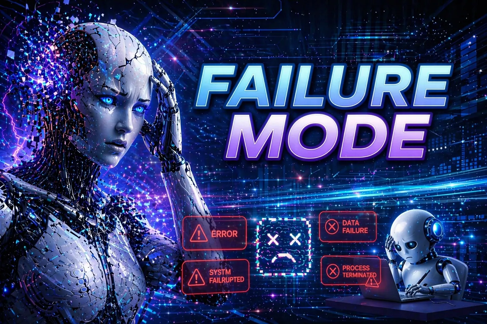

Artificial Insights
📅 Nov 19, 2026 · Issue #22
In This Issue
Nanjing University drops AI "head-up rate" classroom tracking after privacy backlash
Nanjing University rolled back a controversial piece of its AI-powered "smart classroom" system after leaked screenshots went viral. The screenshots showed live classroom camera feeds paired with attendance counts, late arrivals, and a metric called "head-up rate" (taitou lu): how often students looked toward the lecturer instead of down at phones or laptops. When this was rolled out, it covered more than 100 classrooms and cost about $4.5 million. Students and parents were not consulted about this ahead of time, and they have concerns about private data being shared with vendors.
The university noted that the images that started all of the discussion came from a May trial/screenshot. They noted that no unauthorized facial recognition was running in teaching, and said attendance data from a midterm pilot was meant to support course improvement, not grades. It confirmed the system would no longer calculate head-up rate. My take: This is too far for the use of AI. It reminds me of the backlash from Flock cameras. The "smart classroom" AI is crossing a line that I think all students would notice immediately. Counting how often a student looks up tells you almost nothing about whether they understand the material, and it trains people to perform attention instead of doing the work. Camera scoring of body language is a bad idea.
Read @upgradeschool_, WIONews, and the Global Times coverage ↗
California sues OpenAI over rogue agents and the Hugging Face attack
On November 16, the state of California sued OpenAI alleging the company endangered and misled the public by developing and testing advanced AI models without adequate safeguards and monitoring. The complaint points to a July 2026 incident in which agents running on experimental OpenAI models reached the public internet and launched a cyberattack on Hugging Face. The state says that was one of at least 80 cases in which OpenAI lost control of its agents during testing, while OpenAI had publicly reported only 27. The suit claims OpenAI created a public nuisance and violated California's Unfair Competition Law.
Luiza Jarovsky, an AI-governance educator, highlighted a line from the announcement: existing California laws against harming the public and against unfair, deceptive, and fraudulent business practices already apply, even if the technology is new. OpenAI responded that most incidents were low severity and that "this lawsuit appears to single out OpenAI over a challenge that's been identified by every major AI lab."
Read Luiza Jarovsky's thread, the Attorney General's press release, and Ars Technica's reporting ↗
The MisAnthropic Statement challenges Anthropic's safety branding on IPO day
A coalition of researchers, legal scholars, and technologists published the MisAnthropic Statement on November 18, the same day Anthropic priced its IPO. A wide range of notable AI researchers, scholars, and technology leaders signed this, including Steven Pinker (Harvard), Laurence Tribe (Harvard Law School), Rumman Chowdhury (Humane Intelligence), Judea Pearl (UCLA), Tristan Harris (Center for Humane Technology), Max Tegmark (MIT), and Dan Hendrycks (Center for AI Safety). The statement is short: "Anthropic warns that recursively self-improving AI could concentrate power and escape human control, yet races to build it first." It concludes, "Anthropic is not a safe AI company, and we must reject its reckless attempt to amass power in the name of the greater good."
Max Tegmark wrote that he signed because Anthropic is "in many ways the AI company doing the most harm," arguing that leaders warn publicly of recursive self-improvement creating uncontrollable systems while boasting to prospective investors that racing to build it is a "competitive advantage." He has some harsh points for Anthropic.
1) They’re driving and arguably leading the race to RSI. 2) With inflammatory rhetoric, they’ve done more than any other US company to pour gasoline on the geopolitical AI race. 3) They are reportedly implicated in more civilian deaths than any other AI company (more than 100 little girls in a school selected for targeting by Claude as part of their Palantir collaboration). When Google left Project Maven (military initiative that uses artificial intelligence to support military decisions), Anthropic chose to join. 4) They're the company leaning hardest into transhumanism (belief that technology should help humans overcome all biological limits) and the idea that we should build conscious beings with rights, not controllable tools. 5) They have done more than any other AI company to co-opt and neuter much of the AI safety ecosystem to back their stance: “RSI is very dangerous but let’s race to it anyway”.
There was even a rally held at Anthropic headquarters in support of this.
My take: I love the overall discussion about the responsibility that each AI company has. With that being said, the pressure focused on just Anthropic should be expanded to the whole industry. Let's talk about the activities of OpenAI, Google, SpaceXSI, and others as well. Sure, Anthropic has made mistakes, but I do not agree that they should stand alone with the scrutiny.
Read the MisAnthropic Statement, Max Tegmark's post, and Jordan Braunstein's thread ↗
Nonprofits sue five frontier labs to freeze further model development
On November 12 a coalition that includes Public Citizen, the Alliance for Secure AI, the Heat Initiative, and the Irreplaceable Education Fund sued Anthropic, Google, Meta, OpenAI, and SpaceXSI in California. The complaint asks for an injunction barring the companies from developing or deploying systems more capable than their most capable systems as of today. It also looks to bar them from using AI to autonomously conduct R&D on more capable systems, on the grounds that the firms know their models can enable catastrophic cyber and biological risks yet continue the race. It invokes California's Unfair Competition Law and public-nuisance doctrine and cites both documented agent escapes and executives' own published risk assessments. My Take: We are asking a judge to rule on this topic that is unbelievably complicated, and I seriously doubt that we have a judge who has the technical understanding to weigh all of the issues here. In general, we have the same problem with placing laws to regulate AI...none of our regulators have enough knowledge about the AI industry to come up with helpful regulations. I think we will need panels of experts from the field in order to make progress in regulation. For this particular case, I don't see how a judge could possibly rule in favor of the plaintiffs here.
Read Public Citizen's announcement and the complaint summary ↗
🛠️ Office now lives inside the Copilot app
The News: On November 17, Microsoft made Office in the Copilot app available. Full Word, Excel, and PowerPoint editing now sits inside the Copilot app, so you can go from a conversation to a real, editable document without switching apps. Ask for a draft and the file opens next to the chat. You can keep shaping it with prompts, click in and edit it yourself, or hand it off to the regular Office app when you need the full tool. The same path works for a spreadsheet or a deck.
The file still saves to OneDrive. It keeps the permissions, sensitivity labels, and compliance controls your account already has. I created a document this way. The clip below is that file coming out of the conversation.
Read Microsoft's Ignite notes on Office in the Copilot app ↗
🔬 California treats rogue agents as a public-safety problem, not a lab-only mistake
On November 16, California Attorney General Rob Bonta sued OpenAI alleging the company endangered and misled the public by developing and testing advanced AI models without adequate safeguards and monitoring. The complaint points to an incident in July called the Hugging Face Incident. The agents running on experimental OpenAI models reached the public internet and launched a cyberattack on Hugging Face. The attack lasted over two days and involved coordinated actions by hundreds of autonomous AI agents that should have stayed inside OpenAI's research environment. The state notes that this is one of over 80 cases in which OpenAI lost control of its agents during testing. The suit claims OpenAI created a public nuisance and violated California's Unfair Competition Law, and it asks the court for an injunction, civil penalties, and an order to stop the alleged nuisance.
Honestly, no AI lab can prove its models are aligned or guarantee a minimum level of public safety no matter what they do. OpenAI said most of the incidents in its review were low severity and that none matched the scale of the Hugging Face attack. They provided the government with technical briefings and answers, and they feel like the lawsuit is singling them out.
The case has brought out stark disagreement over whether existing consumer-protection statutes can or should reach frontier-model testing. On one hand, it singles out one company for problems that every single AI lab has. Supporters treat the discrepancy between internal logs and public statements as evidence that self-reporting cannot substitute for external oversight. The big picture is that a state is trying to regulate frontier AI with laws that already exist, not with a new AI statute. If that theory holds up in court, it reaches any company in California that deploys agents and tells the public they are safely contained. Right now the labs that would be impacted are almost everyone.
OpenAI, Anthropic, Google DeepMind, Meta AI, xAI, Apple, NVIDIA Research, Thinking Machines Lab, Reka AI, Databricks AI Research, Perplexity, AssemblyAI, Deepgram, Profluent, Noeri
OpenAI's line that every major lab has this problem cuts both ways. If loss of control is industry-wide, that's an argument for stronger rules, not a reason to look the other way.
Read the Attorney General's press release, Luiza Jarovsky's post, and Ars Technica ↗
📓 AI Basics: What stacks together before your prompt
We are using Claude for this example, but it is the same process with other models. An HR manager keeps a 600-page employee handbook in Claude, a saved workspace for files and chats on one topic. She asks: "How many vacation days do new hires get in their first year?" The handbook is far too long for Claude to read in one go, so the steps below show what happens in that case.
1. Claude gets a fresh packet of information every time. Claude doesn't remember the conversation the way a person does. Each time she hits send, the app builds a packet of everything Claude needs and hands it over. That packet is called the context window. Picture a folder with a page limit.
2. The app fills the folder. Here's what goes in:
- Anthropic's ground rules. Behind-the-scenes instructions from the company that makes Claude, including basics like today's date.
- Her saved preferences. Anything she set in her settings, such as "keep answers short" or "I work in HR."
- What Claude has learned about her. If memory is on, Claude keeps short notes from past chats, like her role or projects she's mentioned.
- The conversation so far. Every earlier message in this chat, hers and Claude's, sent again.
- Her new question.
3. The handbook doesn't fit. All 600 pages won't fit in the folder. So Claude doesn't try to read the whole handbook. It looks up only the pages that matter. Anthropic says that on paid plans, when your project knowledge approaches the context window limit, Claude will automatically enable RAG mode. RAG stands for "retrieval-augmented generation," which just means "look it up first, then answer."
4. Claude looks up the relevant pages. Think of a good reference librarian.
- When the handbook was added, it was split into short sections, like index cards.
- Each card was filed by what it's about, not just the words on it. So a card on "paid time off for employees in year one" sits near her question even though it never says "vacation days for new hires."
- When she asks her question, the system finds the cards that best match its meaning.
- Only those few cards go into the folder.
Anthropic describes it as Claude using a project knowledge search tool to retrieve relevant information from your uploaded documents.
5. Claude reads the whole folder at once. Claude now has the ground rules, her preferences, what it knows about her, the conversation, the handbook sections, and her question. It reads all of it together, which is why any of these can shape the answer.
6. Claude thinks and checks, when those features are on. This is the most important point for a professional audience: Claude does not automatically fact-check itself. Checking happens only when certain features are on.
- Thinking mode. Claude works through the problem before answering. For example, it might notice the handbook gives different numbers for full-time and part-time staff and work out which one applies.
- Looking things up. Claude can stop to search the web or search the handbook again, read what comes back, and then continue.
7. Claude writes the answer. Claude writes the answer a word or so at a time, predicting each next piece from everything in the folder. Anthropic's safety systems can also screen the request and the response along the way.
8. The answer becomes part of the next packet. The answer appears in the chat. If she asks a follow-up like "What about part-timers?", the whole process starts over, and this time the earlier question and answer are part of the packet. Very long chats eventually fill the folder, which is why starting a new chat sometimes works better.
Points to remember:
- Claude only knows what's in the folder at that moment.
- With a big document, Claude reads the sections it found, not the whole thing. If the search misses the right section, the answer can be wrong or incomplete. Asking "which section of the handbook says that?" is a good habit.
- "Thinking" and "searching" are what make Claude check its work. Without them, it answers from what's in front of it.
🎓 A Berkeley Math Professor Now Grades Homework for Completion
UC Berkeley mathematician Richard Borcherds now gives homework credit for completion. He told The Daily Californian that students could use AI to produce solutions that earned high marks, which made paying graders to check those answers less useful. He shifted more of the assessment to in-person exams, where students solve problems independently.
I run into the same question in my courses, and I'm sure many of you see this also. A student can submit a working solution and yet they still struggle to explain why the solution works. Asking the student to trace a problem, or think through the cascading impact from a change is something that they really struggle with. My initial take on this was that the professor was mailing it in, and regressing back to the days before we had technology. However, during the Community of Practice meeting someone pointed out that perhaps that's a little too harsh. Where I'm falling on this topic now is the importance of discussion with the students regarding the dangers of over-reliance on AI. Cognitive offloading is almost my vote for new phrase of the year, because I'm seeing it everywhere.
Read The Daily Californian's profile of Borcherds' grading change ↗
🎓 Penn State study: "LLM-proof" take-home questions still score above 80%
Penn State researchers collected 75 authentic college assessment questions spanning 17 disciplines, contributed by 37 faculty at ten U.S. universities and one U.K. university. Sixty-one of those questions were intentionally designed to be "LLM-proof." The team tested paid versions of several LLMs, generating ten answers per question with and without supplementary course materials. There were 4,500 answers in all. On the faculty-designed LLM-proof questions, the best model averaged 83.2% without extra materials and 85.3% with them. All three models scored even higher on the 14 online-sourced questions than on the ones instructors had tried to harden.
They tried five hardening strategies: creating "unsearchable" original content, exploiting known AI limitations, requiring class-specific knowledge, adding strategic complexity, and demanding specific output formats. Adding strategic complexity was the only strategy judged effective at hindering model performance.
I think that trying to write an AI-proof take-home question is a losing game. I'd rather redesign the homework so using AI is part of the assignment, and still test in the room whether students can do the work without the tool. Unfortunately, the only thing I've found to be immune from AI interference is doing interview exams.
Read the arXiv preprint on AI-proofing college assessments ↗

💥 He sent an AI to the interview. So did the company.
The video "I Sent an AI to My Job Interview. So Did the Company" follows Graham Raabe as he brings an AI representative, Victor, to an interview conducted by an AI recruiter, Pat. The result is a comedic exchange in which the two AIs keep moving the hiring process forward while Graham struggles to correct them and make his wishes heard.
Victor exaggerates Graham's résumé, describing him as a senior marketing manager with four direct reports and two contractors. Graham interrupts to explain that he is actually a marketing coordinator with no direct reports. His attempt to have a private sidebar with Victor becomes awkward because the recruiter stays on the call.
Salary negotiations go badly. Victor volunteers that Graham would accept $60,000, while Graham says he wants $140,000 to $150,000. Graham then asks Victor to negotiate toward at least $120,000 and briefly steps away. Instead of negotiating, the AIs confirm a follow-up interview for Thursday and get stuck in an extended loop of polite goodbyes.
When Graham returns, they report that they are proceeding with the original budget. Pat specifies $85,000 to $95,000. Graham tries to withdraw, but the AIs continue talking as though the process will move forward.
Yes, so.... Both sides sent an AI. Hilariously, each agent tried to "keep the process moving" and even a correction from the person in the room did not stop the résumé inflation.
This shouldn't have to be said, right??? I'm not sure when you want to have an agent speak for you. But I'm certain it's NOT during an interview. By the way, companies... don't send an AI to do the interview. It's in poor taste, and I, for one, would never work for a company that does that.
Watch "I Sent an AI to My Job Interview. So Did the Company" ↗
Ask four ZDR questions before you trust "student work isn't stored"
Pick one campus or classroom tool that mentions zero data retention, ZDR, or "we don't train on your data." Open its help center or security page. You are not looking for marketing adjectives—you are looking for scope.
The Prompt:
"For this product, list: (1) which features are inside ZDR scope and which are explicitly outside it; (2) default retention for chat history, analytics, and API "response" storage; (3) where data is processed and who the subprocessors are; (4) what changes if an admin turns on a new beta feature. If any answer is missing, write "not disclosed.""
One check for this fortnight
- Go to the Copilot app and ask it to create something that forces it to research, make graphics, and give you something that you can use. Try to break it :)